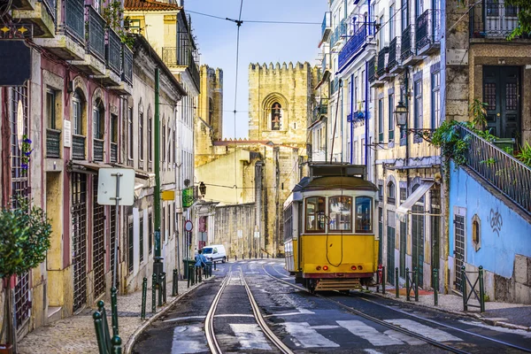
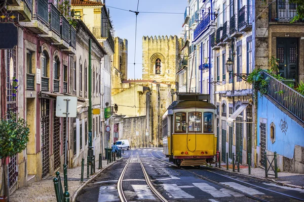
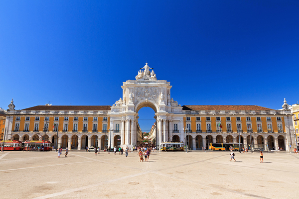
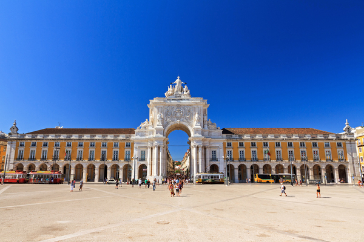
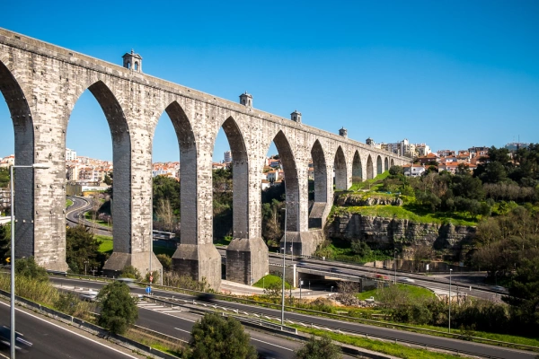
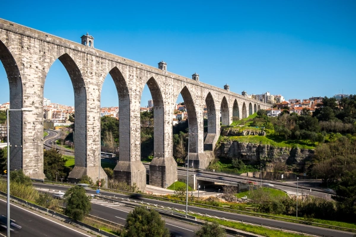

Multimédia
Nesta página encontra conteúdos Multimédia
Fotografias

 

 

 

Vídeo
Poesia
Lisboa, Minha Querida Maluca
Oh Lisboa, cidade das sete colinas,
Onde o Tejo dança com ondas tão finas!
Teus elétricos sobem, rangem, e vão,
Como avós teimosos com o coração na mão.
No Bairro Alto, a noite é um fado,
Guitarras choram, o vinho é sagrado.
Na Alfama, o cheiro a sardinha no ar,
Faz até os gatos querer dançar!
Teus miradouros, que vistas de postal,
Mas subir até lá? Um treino fatal!
Pastéis de Belém, pecado guloso,
Cada dentada é um beijo formoso.
Lisboa, és velha, mas cheia de graça,
Com ruas tortas que a alma abraça.
Entre tuk-tuks e turistas a mil,
És a rainha do meu coração subtil!